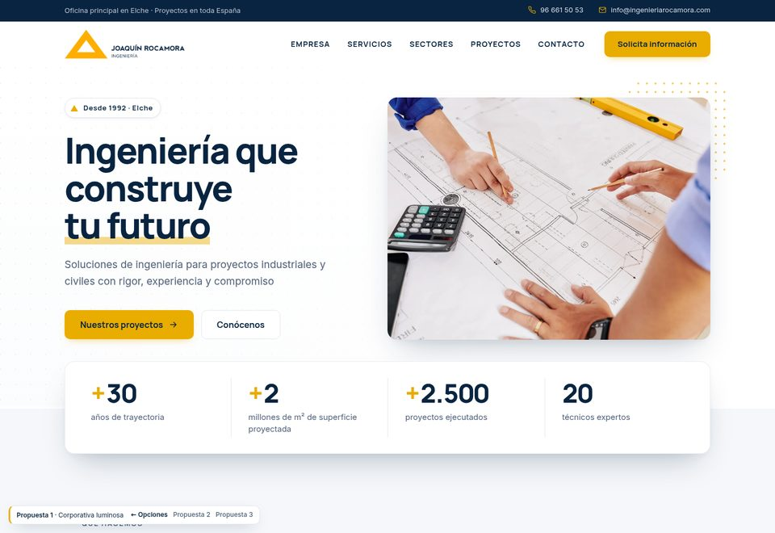
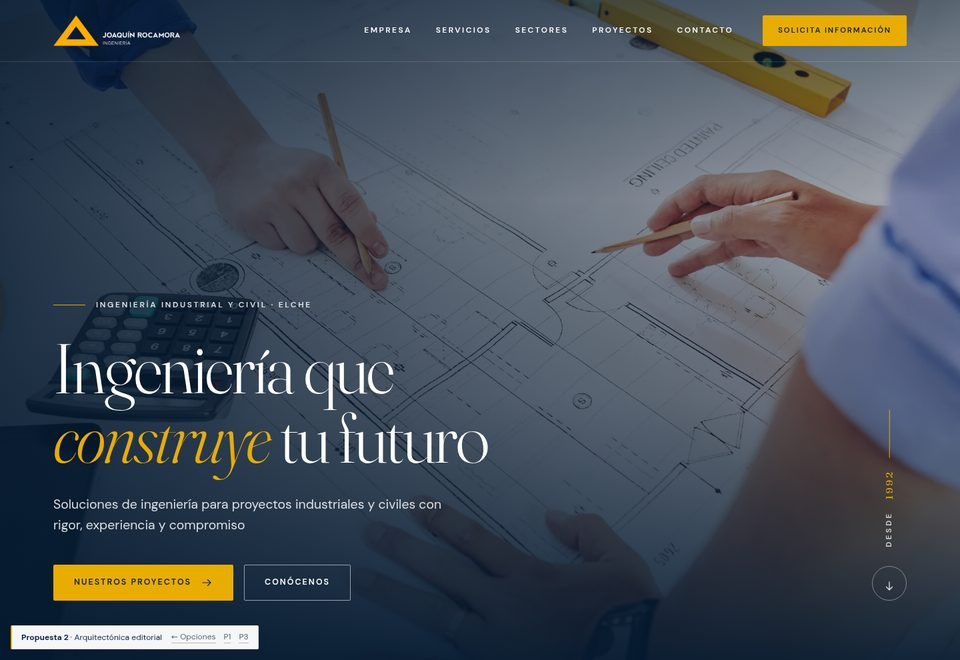
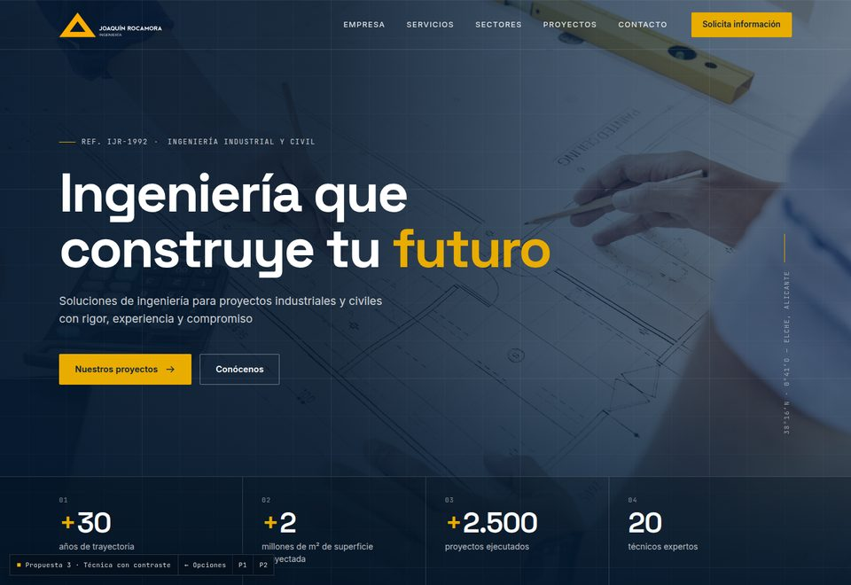

01Propuesta
Corporativa luminosa
La más cercana a la identidad actual, pero más limpia y con más aire. Fondos claros, azul marino para textos y dorado en botones y cifras.
Ver propuesta
02Propuesta
Arquitectónica editorial
Tono más premium, tipo estudio de arquitectura: titulares con serif elegante, composición tipo revista y líneas finas doradas.
Ver propuesta
03Propuesta
Técnica con contraste
Más impacto visual: secciones oscuras y claras alternas, guiños a los planos de ingeniería (rejilla, cotas) y el dorado como único realce.
Ver propuestaQué incluye cada propuesta
- Página de inicio completa: cabecera, cifras, servicios, sectores, empresa, proyectos, historia, contacto y pie.
- Adaptada a móvil, tablet y escritorio (se puede probar estrechando la ventana).
- Animaciones suaves al hacer scroll y contadores animados.
A tener en cuenta
- Son maquetas visuales en HTML, no la web final: los enlaces internos y el formulario no están operativos.
- Se pueden combinar elementos de varias propuestas (p. ej. la cabecera de una y los servicios de otra).
- Textos, cifras y fotos son los de la web en desarrollo.